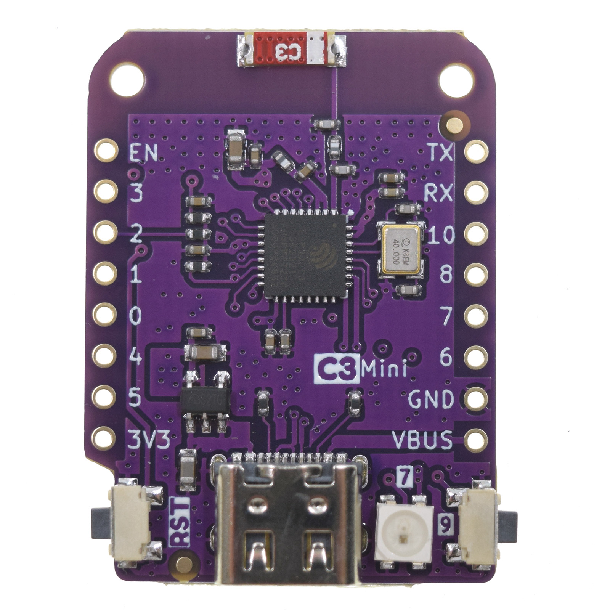
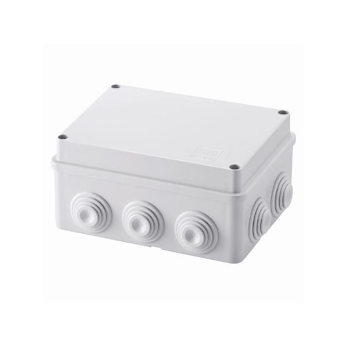

Stima WiFi V3¶
Introduzione¶
Stima WiFi è una stazione di monitoraggio ambientale, uno strumento che misura in modo continuativo, a intervalli regolari, alcuni parametri chimici e fisici che caratterizzano l’inquinamento e le proprietà dell’ambiente in cui viviamo.
La stazione Stima WiFi è un apparato pensato per il monitoraggio ambientale non troppo complicato da assemblare e di costo relativamento contenuto. Il software e, nei limiti del possibile, l’hardware utilizzato è stato selezionato per permettere la condivisione di schemi di assemblaggio, firmware e software di supporto sotto licenze libere. Anche i dati raccolti vengono sono rilasciati con una licenza permissiva CC-BY 4.0
Non è una stazione di rilevamento meteorologico che segue i rigorosi standard dell’organizzazione meteorologica mondiale. I criteri per la sua installazione sono diversi e meno stringenti da quelli da seguire per la messa in opera e l’uso di queste ultime ma bisogna comunque prestare una certa attenzione nel suo assemblaggio. Non si tratta solamente di un problema di nomenclatura, perché i parametri analizzati, lo scopo ed i criteri di messa in opera sono molto differenti. Il kit di autocostruzione è progettato per poter essere assemblato senza richiedere particolari capacità o competenze, giusto un po’ di attenzione e manualità.

Pavimenti bassi, soffitti alti e stanze spaziose
Quando discuteva di tecnologie di supporto alla didattica Seymour Papert sottolineava spesso l’importanza di "pavimenti bassi" e dei "soffitti alti". Per essere efficace, affermava, una tecnologia deve essere facile da apprendere ed esplorare per i principianti (pavimenti bassi) ma, con il tempo, deve permettere di lavorare su progetti sempre più sofisticati (soffitti alti).
Per un quadro più completo, bisogna aggiungere una dimensione in più l’ampiezza dell’ambiente [di apprendimento] (stanze spaziose). Non basta prevedere un percorso di apprendimento dal pavimento basso al soffitto alto; dobbiamo offrire la possibilità di esplorare differenti percorsi significativi.
[libera interpretazione del pensiero di] Mitchel Resnick

Schema a blocchi¶

Caratteristiche del progetto:
Precisione delle misure;
Economicità dell’hardware
Facilità di assemblaggio
Possibilità di personalizzazione
Il progetto RMAP, di cui la stazione Stima WiFi fa parte, è in continua evoluzione e così la stazione di monitoraggio ha vissuto diverse incarnazioni, variando la sua configurazione in base all’hardware via via disponibile.
Componenti Hardware¶

MCU - Espressif ESP32 C3¶
based ESP32-C3 WIFI & Bluetooth LE RISC-V Single-Core CPU
Type-C USB
4MB Flash
1x WS2812B RGB LED
Digital I/O Pins 12
ADC, I2C, SPI, UART
Compatible with LOLIN D1 mini shields
Compatible with MicroPython, Arduino, CircuitPython and ESP-IDF
Operating Voltage 3.3V
Clock Speed 160MHz
Flash 4M Bytes
Size 34.3*25.4mm
Weight 2.6g
La scheda di sviluppo, basata su esp32, è stata lanciata da Wemos, come alternativa alle schede Arduino. Nella versione mini misura (35x26mm).
Come con arduino, il modulo è espandibile con apposite schede di espansione dette shield.
Power Shield¶

La scheda D1 mini può essere alimentata tramite connessione usb (micro). Per utilizzare la scheda lontano da un computer si può utilizzare uno shield di alimentazione Alla scheda di espansione possibile connettere un alimentatore esterno ( da 7 a 24 V ).
Oled Shield¶

Dimensione dello schermo: 64x48 pixel VCC: 3.3V Driver IC: SSD1306 Indirizzo I2C: 0x3C or 0x3D Può essere utilizzato sia impilato sullo stack principale, sia collegato alla base di espansione (in entrambi i casi via I2C bus)
RTC and Microsd Data Logger Shield¶

Data logger shield per la memorizzazione dei dati tramite scheda MicroSD e orologio in tempo reale integrato DS1307 con quarzo
Base Board¶
Esporta le connessioni al bus I2C.
Può essere popolata con diversi tipi di connettori (passo 2.54mm)

Dei sensori in dotazione, quello per il particolato è alimentato a 5V, gli altri componenti a 3.3v.
La base board permette di selezionare il voltaggio adatto al sensore tramite un cavallotto. Se il selettore non è popolato, la periferica collegata, non riceve alimentazione.

BUS I2C¶
Stima WiFi controlla i sensori via bus I2C. http://www.i2c-bus.org/ https://www.nxp.com/docs/en/application-note/AN10216.pdf
Protocollo seriale (sincrono)
due sole linee comunicazione * SCL (Serial CLock) (sincronia) * SDA (Serial DAta)
Single Master ~ slave // Multi-master
Lento (100/400 kbit/s)
Supporta fino a 127 device
Ogni device ha indirizzo univoco (sul bus)
Semplice interazione basata su messaggi (Master invia richiesta ad indirizzo device slave, slave device risponde solo se interpellato)
Scatola¶
Serve a proteggere l’elettronica ed alloggiare parte dei sensori.
Deve essere divisa in due sezioni principali, una ospita i componenti elettronici, l’altra (divisa a sua volta in due camere separate) il sensore per le polveri sottili e quello per la rilevazione della concentrazione di CO2

Nella parte alta della foto si nota l’alloggiamento delle componenti elettroniche principali.
La parte bassa è divisa in due sezioni e queste sezioni sono aperte verso l’esterno a differenza di quella superiore
I cavi per i sensori passano attraverso piccole incisioni del polietilene per mantere il più possibile la camera superiore stagna
La finestra per il monitor è ricavata incollando un riquadro di policarbonato con della colla a caldo.
Schermo solare¶

Alloggiamento esterno alla stazione per sensore umidità e temperatura
Protegge il sensore da intemperie
Protegge il sensore da radiazione solare diretta
Evita surriscaldamento e migliora precisione
Può essere autocostruito https://e.pavlin.si/2019/02/04/low-cost-solar-radiation-shield/
Modelli molto economici già pronti
Connessione Device¶
Connettere i device necessari è semplice
assicurarsi che la stazione non sia alimentata
selezionare appropriato voltaggio alimentazione
assicurarsi che i collegamenti siano corretti (SCl -> SCl, SDA->SDA, GND -> GND, Vcc ->Vcc)
NOTE
Alcuni device hanno più dei quattro pin necessari alla connessione al bus I2C
VCC, Vcc, Vdd e VDD sono denominazioni equivalenti
Sensori¶
Sensirion SPS30 (Sensore per le polveri sottili)¶

Tecnologia: Scatter Beam OPC (Optical Particulate Counter)
VCC: 5V
Indirizzo I2C: 0x69
Data Sheet: https://sensirion.com/products/catalog/SPS30/
Note: Connettore a 5 poli.
Il quinto filo del connettore deve essere collegato a GND per selezionare la modalità I2C (se lasciato non collegato il sensore comunica con la modalità UART
Sensirion SCD30 (Sensore CO 2 )¶

Tecnologia: NonDispersive InfraRed (NDIR)
VCC: 3.3V ~ 5.5V
Indirizzo I2C: 0x61
Data Sheet: https://sensirion.com/products/catalog/SCD30/

Sensirion SHT85 (Sensore Umidità & Temperatura)¶

Tecnologia: Scatter Beam OPC (Optical Particulate Counter)
VCC: 2.5V ~ 3.3V ~ 5V (Typical 3.3V)
Indirizzo I2C: 0x44
Data Sheet: https://sensirion.com/products/catalog/SHT85/

Software¶
FreeRtos viene utilizzato attraverso un wrapper C++. Ogni thread ha una struttura dati utilizzata per comunicare trutture dati e dati. Nessun dato possibilmente è definito globalmente.
Il colore del led indica lo stato di funzionamento:
spento: sconosciuto
blu: in elaborazione
verde : tutto funziona
Rosso: almeno un errore è presente
Il display è opzionale e visualizza comunicazioni, ogni 3 secondi lo stato aggiornato riassuntivo di funzionamento e un riassunto delle ultime misurazioni effettuate. Sono supportati due differenti display con dimensioni differenti riconosciuti automaticamente.
L'SD card è opzionale; se presente è utilizzata per memorizzare i dati in sqlite3; la struttura del DB è qui rappresentata
Dopo essere passati dal DB sqlite i file vengono trasferiti in un archivio, integrato in modalità append.
Per poter utilizzare la stazione in modalità "mobile" ossia con posizione continuamente aggiornata ci sono due possibilità:
connettere un modulo GPS con Ublox neo6m
utilizzare l'app android GPSD_forwarder
La configurazione è gestita sul server e i thread sono attivati automaticamente. Quando la geolocalizzazione è possibile i dati vengono generati, in caso contrario no.
E' attivo un web server accessibile quando ci si connette allo stesso Wifi a cui è connessa la stazione, Sono forniti le seguenti URL/servizi:
http://<station slug> Full main page
http://<station slug>/data.json Data in json format
http://<station slug>/geo Coordinate of the station
I dati sono visualizzabile da browser sempre se connessi allo stesso WiFi autenticandosi sul server RMAP e accedendo alla propria pagina personale, selezionando la stazione e poi alla voce "Mostra i dettagli stazione" e poi "Dati locali in tempo reale".
Il reset delle configurazioni è effettuabile a stazione disalimentata collegando a massa il pin RESET_PIN o premendo il pulsante A della board del display, alimentare la stazione e dopo 10 secondi scollegare il RESET_PIN o rilasciare il pulsante. Il reset della configurazione effettua:
rimozione delle configurazioni del wifi
rimozione delle configurazioni stazione (utente slug password)
completa formattazione dell'SD card con rimozione definitiva di tutti i dati presenti
Il frusso dei dati nelle code è il seguente:
i dati e metadati sono generati da threadMeasure e accodati nella coda mqttqueue per la pubblicazione, ricevuti da threadPublish per la pubblicazione sul broker MQTT; se non c'è spazio vanno direttamente nella coda dbqueue per l'archiviazione su SD card. threadMeasure è attivato periodicamente.
threadPublish prova la pubblicazione MQTT.
Dopo ogni tentativo di pubblicazione al broker MQTT i dati vengono accodati per l'archiviazione nella coda dbqueue etichettati relativamente al risultato della pubblicazione.
Il thread threadDb gestisce due tipi di archiviazione dati.
Il primo (DB) che contiene gli ultimi dati misurati (solitamente 24 ore) con sovrascrittura nel database e una etichetta a indicare lo stato di pubblicazione; fino a quando i dati sono presenti in questo DB i dati possono essere recuperati per la pubblicazione fino al successo della pubblicazione.
Quando i dati nel DB invecchiano oltre il limite vengono trasferiti nell'archivio dove potranno essere riletti solo tramite un PC.
Ogni thread ha una struttura dati che descrive lo stato di funzionamento. Il thread loop di arduino effettua una sintesi degli stati di tutti i thread e li visualizza tramite i colori del LED e tramite il display opzionale.
Per pubblicare e archiviare i dati è necessario avere un corretto timestamp. Data e ora possono essere impostati tramite:
NTP
GPS
UDP
Se presente un RTC locale (DS1307) data e ora sono impostate sull'RTC automaticamente con uno dei metodi precedenti e poi se tutti i metodi precedenti non sono più disponibili riletti dall'RTC.
Senza un corretto timestamp i dati non possono essere gestiti e vengono subito ignorati.
Threads:
thread loop arduino¶
Questo thread esegue tutte le operazioni iniziali di configurazione e attivazione degli altri thread. Prima si configura la connessione WiFi insieme ad alcuni parametri univoci della stazione. Tramite questi ultimi la configurazione stazione viene scaricata dal server. Il thread governa la visualizzazione sul display e la colorazione del LED. Inoltre è possibile visualizzare i dati misurati tramite un browser indirizzandolo sulla pagina personale sul server RMAP. La libreria TimeAlarm gestisce l'attivazione dei segnali ai thread per attivazioni perioche.
threadMeasure¶
Questo thread si occupa di interrogare i sensori, associare i metadati e accodarli per la pubblicazione e archiviazione. I sensori vengono interrogati in parallelo tramite delle macchine a stati finiti. Inoltre viene prodotta una struttura di dati di riassunto delle misure effettuate. Insieme alla libreria di driver per sensori viene gestita la loro inizializzazione e il restart in caso di ripetuti errori.
threadPublish¶
Pubblica i dati in MQTT secondo lo standard RMAP. Se la configurazione è per una stazione mobile della struttura con la geolocalizzazione viene controllato il timestamp e se ancora attuale associate le coordinate ai dati. Periodicamente viene pubblicato anche lo stato della diagnostica fatta dalla stazione; il server provvederà a visualizzarne lo stato e a inviare delle email di segnalazione al proprietario della stazione e a un apposito gruppo di utenti di amministrazione.
threadDb¶
Archivia i dati su SD card. Il formato del DB è quello portabile di sqlite3 e possono essere letti tramite la stessa libreria da PC. Più scritture con gli stessi metadati aggiornano i dati, non creano record duplicati. L'archivio invece è composto da due file, uno di descrizione e il secondo con i dati.
Il thread threadDb viene attivato periodicamente per recuperare l'invio dei dati presenti nel DB e non ancora pubblicati inviando un piccolo blocco di dati a mqttqueue fino a quando avanzi sufficiente spazio nella coda di pubblicazione per altri thread.
Il thread threadDb esegue a priorità più alta degli altri per garantire l'archiviazione senza perdita di dati in tempi utili e non riempire le code.
I dati vengo continuamente traferiti dal DB all'archivio eliminando dal database i dati più vecchi trasferendoli in un semplice archivio su file sempre sull'SD card. I dati in archivio possono essere letti e traferiti sul server RMAP tramite mqtt2bufr, un tool della suite RMAP.
Se all'avvio i dati presenti nel DB risultano essere tutti vecchi i dati vengono traferiti all'archivio e l'intero DB viene eliminato e ricreato vuoto per limiti di memoria e performance.
threadUdp¶
Legge i dati UDP inviati dalla app GPSD forwarder di uno smartphone riempiendo una struttura dati con la geolocalizzazione e un timestamp.
threadGps¶
Legge i dati dal GPS se presente (porta seriale) riempiendo una struttura dati con la geolocalizzazione e un timestamp.
Messa in opera della stazione¶
La messa in opera della stazione può essere affrontata in più fasi: dopo aver assemblato la scheda elettronica ed averla posizionata nel proprio guscio bisognerà configurare la stazione, registrarla presso il sito che raccoglierà i dati e installare la stazione nel sito prescelto.
In queste pagine tratteremo sommariamente queste operazioni preoccupandoci di dare delle indicazioni di massima su cosa fare, sui materiali e strumenti necessari alla corretta esecuzione delle procedure necessarie alla messa in opera.
Assemblaggio scheda elettronica¶
La prima fase della messa in opera presuppone l’assemblaggio del data logger, la parte della stazione che si occupa di consultare periodicamente i sensori installati e di inviare i campionamenti al server centrale.
A seconda del kit utilizzato, potrebbe essere necessario utilizzare un saldatore a stagno per installare i connettori a pettine necessari a collegare tra loro i vari componenti ed assemblare i cavi di connessione (il progetto prevede che connettori e cavi siano preassemblati ma nulla vieta, per chi avesse tra gli obiettivi di migliorare la confidenza con la saldatura di componenti elettronici di utilizzare il kit senza il servizio di saldatura).
I diversi moduli dovranno essere collegati tra di loro rispettando la polarità. Prima di procedere alla connessione dei sensori, bisognerà controllare che il sistema funzioni attivandolo tramite l’alimentatore in dotazione oppure collegandolo via usb ad un computer.
L’apparizione sul piccolo schermo oled in dotazione della scritta Starting Up! seguito dal numero di versione del firmware e, nella schermata successiva dell’ESSID di configurazione della scheda, STIMA-Config, e della password indicano che l’assemblaggio è stato completato con successo.
Una volta completata con successo il primo avvio, visto che la scheda può essere alimentata in due modi diversi, tramite connettore micro usb e tramite alimentatore 12v, bisogna togliere l’alimentazione e provare il metodo ad alimentare la stazione verificando anche la modalità di alimentazione che non si è ancora utilizzata.
Strumentazione necessaria¶
cavo micro usb
computer/Alimentatore per smartphone
saldatore a stagno*
Dotazione Software¶
Nessuna
Caricamento firmware¶
Questa fase della messa in opera è facoltativa. La stazione arriva già con un firmware installato pronta per la configurazione iniziale ma, in caso si voglia modificare l’utilizzo della stazione, personalizzarne le funzionalità o cogliere l’occasione di impratichirsi con questa operazione fondamentale nel ciclo di vita del software per microcontrollori,
La stazione Stima WiFi è basata sul microcontrollore Esp32 prodotto da ExpressIf. Si tratta di una soluzione economica e affidabile che da qualche anno sta aumentando esponenzialmente la propria popolarità. Il produttore mette a disposizione strumenti gratuiti e liberi per lo sviluppo, e sono diffuse librerie ed ambienti di progettazione per i maggiori linguaggi di programmazione.
Fatta salva la facoltà di usare la soluzione software con cui si ha più confidenza, abbiamo selezionato, per la ridotta invasività, la licenza di distribuzione e la disponibilità su tutti i maggiori sistemi operativi, dell’ambiente di sviluppo integrato Platformio disponibile all’Url https://www.platformio.org che è a sua volta basato su ambiente di sviluppo Python.
Questa scelta, val la pena notarlo, non influisce in alcun modo sulle dotazioni software adottabili successivamente per lo sviluppo di programmi che interagiscano con la stazione di monitoraggio dopo la sua installazione.
NOTA: Non tutti i cavi usb sono uguali, in special modo quelli forniti con gli smartphone. Alcuni sono adatti solo all’alimentazione ed alla ricarica dei dispositivi e non permettono lo scambio di dati. Se il computer non sembra riconoscere la stazione provare a sostituire il cavo di connessione. Se anche questa prova non sortisce effetti, ma la stazione si accende regolarmente, è probabile che il computer in uso non riconosca l’interfaccia seriale usb usata dalla stazione. In questo caso bisognerà caricare l’apposito driver prima di poter procedere.
Strumentazione necessaria¶
cavo micro usb
computer
Dotazione Software¶
Ambiente di sviluppo Python
Platformio (Piattaforma per lo sviluppo embedded)
Collegamento dei sensori¶
Prima di procedere con questa fase, disalimentare la stazione di monitoraggio.
Una volta assemblata e configurata la scheda madre della stazione, è necessario collegare i sensori alla scheda e verificarne il funzionamento.
Per farlo bisogna assemblare i cavi di collegamento secondo gli schemi forniti dal produttore dei sensori facendo in modo che corrispondono alla piedinatura dei connettori presenti sulla stazione Stima WiFi.

Dopo aver messo a punto la cavetteria bisogna collegare i sensori ognuno secondo lo standard facendo attenzione alla polarità ed al voltaggio (il sensore di polveri sottili ha bisogno di essere alimentato a 5v mentre gli altri sensori a 3,3v)
La prima installazione ed il collaudo dei sensori è una fase critica, errori possono rendere un sensore, la scheda o entrambi inutilizzabili. Prima di alimentare ancora una volta la stazione, è buona norma controllare la connessione con un multimetro che disponga della modalità test di continuità. Dopo le opportune verifiche bisogna collegare l’alimentazione esterna, usando l’alimentatore esterno in dotazione, e verificare che la stazione si avvii regolarmente.
Dovrebbe comparire sullo schermo un messaggio che invita a collegarsi alla rete wireless attivata per le operazioni di configurazione iniziale. Prima di procedere, però, è necessario censire la stazione presso il server centrale.
NOTA: Anche se operano in condizioni ideali, i sensori di rilevamento hanno, al netto di malfunzionamenti, una vita attesa non illimitata. Si stima che passino circa due anni prima che i sensori, in special modo quello per il particolato, comincino a perdere di precisione.
Strumentazione necessaria¶
Multimetro
Computer, tablet o smartphone con connettività Wi-Fi
Dotazione Software¶
Un qualunque browser web
Accesso alla rete Wi-Fi
Censimento stazione¶
Prima di poter operare, a meno che non sia stata dotata di un firmware specifico, la stazione deve essere censita presso un server di raccolta dati.
Esistono due punti di raccolta dati, test.rmap.cc ed rmap.cc. Il primo viene utilizzato per le procedure di collaudo, per controllare il funzionamento di prototipi di nuove stazioni e per mettere a punto l’adozione di nuovi sensori; il secondo viene usato per la raccolta e l’elaborazione dei dati sul campo.
Durante la fase di collaudo bisognerà registrare la stazione presso il sito di test, una volta completata l’installazione bisognerà ripetere la registrazione sul sito principare e censire nuovamente la stazione. Non è prevista, al momento, una procedura automatizzata per gestire la migrazione, da effettuarsi una tantum.
Prima di procedere al censimento vero e proprio, il gestore della stazione deve registrare un nuovo utente, nel caso disponga già di un profilo.
Una volta effettuato l’accesso al sito con nome utente e password, sarà possibile censire una o più stazioni.
Censire una stazione consiste nel dichiararne le caratteristiche:
Coordinate
Identificativo di stazione
Altezza dal livello del suolo
Classificazione del sito dal punto di vista qualità dell’aria
Alcune fotografie (5): una della stazione e 4 con le spalle alla stazione verso i 4 punti cardinali
L’identificativo di stazione non è altro che il nome che dovrà essere usato in fase di configurazione iniziale.
Strumentazione necessaria¶
Computer, tablet o smartphone
Dotazione Software¶
Un qualunque browser web
Collaudo Stazione¶
Dopo aver censito la stazione è possibile configurarla. A sensori collegati, si può accendere la stazione di monitoraggio.
Dovrebbe comparire sullo schermo un messaggio che invita a collegarsi alla rete wireless attivata per le operazioni di configurazione iniziale:
ssid: STIMA-config password: bellastima
L’access point è dotato di Capture Portal ma, se l’automatismo non dovesse funzionare, è sempre possibile visitare con un browser l’url http://192.168.4.1 per iniziare la procedura di configurazione.
Una volta raggiunta la pagina di configurazione, bisognerà inserire i dati necessari alla connessione al sito rmap, l’url dell’istanza prescelta e le credenziali per l’accesso alla rete Wi-Fi attraverso la quale la stazione avrà accesso ad internet.
Se tutto andrà per il meglio e la stazione configurata correttamente, sullo schermo cominceranno a scorrere le misure dei diversi sensori; misure che saranno visibili, dopo un lasso di tempo, anche sul sito preposto alla raccolta dei campionamenti.
NOTA: Non è previsto l’uso di proxy con autenticazione per accedere ad internet. In caso l’istituto preveda questa modalità di navigazione sarà necessario derogare in base al mac address della stazione o creando una sottorete Wi-Fi dedicata.
Reset della configurazione¶
Quando necessario, ad esempio per un cambio di configurazione dell'access point wifi, è possibile procedere al reset delle configurazioni effettuando un reset con l'apposito ponticello mentre il ponticello di riconfigurazione è cortocirduitato. Questo video mostra una modalità per procedere alla riconfigurazione.
Strumentazione necessaria¶
Computer, tablet o smartphone con connettività Wi-Fi
Dotazione Software¶
Un qualunque browser web
Accesso alla rete Wi-Fi
Preparazione del guscio¶
Una volta completata l'assemblaggio, la configurazione ed il collaudo della parte elettronica della stazione, bisognerà procedere ad installarla, insieme ad alcuni sensori, all’interno del suo guscio protettivo. Il sensore di temperatura, per non essere influenzato nelle sue misurazioni dal funzionamento della stazione, viene installato in un involucro separato denominato schermo solare passivo.
Con delle forbici o un taglierino, bisognerà tagliare da un foglio di schiuma per imballaggi, che può essere riciclato, dei riquadri che permettano separare l’interno della scatola di derivazione usata come guscio della stazione, in tre compartimenti, uno per l’elettronica, uno per l’ingresso dell’aria da analizzare e un altro alloggiamento che permetterà a sensore di polveri sottili, che andrà installato a cavallo delle due sezioni, di emettere l’aria analizzata senza influenzare il flusso in ingresso.
Il foglio di schiuma andrà fissato alla scatola di derivazione con nastro biadesivo o colla a caldo, a seconda se la parete debba essere rimovibile, insieme ai sensori. Utilizzeremo un cacciavite per praticare dei piccoli tagli nel foglio di schiuma per far passare i cavi di collegamento dei sensori. Per poter controllare lo schermo della stazione dall’esterno, andrà rimosso un passacavi laterale. L’apertura andrà chiusa con un piccolo, 4x4cm, riquadro in plexiglas fissato con la colla a caldo all’interno della scatola di derivazione.
Altri due passacavi laterali dovranno essere intagliati per permettere l’ingresso di cavo di alimentazione e cavo dati del sensore di temperatura.
Infine andranno rimossi i passacavi posti sul lato inferiore per permettere il ricircolo d’aria.
Strumentazione necessaria¶
Forbici o taglierino
Colla a caldo
Nastro biadesivo
Un foglio di Foam a celle chiuse (schiuma per imballaggi)
Multimetro
Cacciavite
Plexiglas
Dotazione Software¶
Nessuna
Installazione in loco¶
L’installazione della stazione prevede opere in muratura ed elettriche che andrebbero eseguite da personale competente.
È possibile usare una staffa per parabola satellitare per ottenere un economico sostegno che allontani la stazione dalla muratura dell’edificio che la sosterrà dello spazio necessario ad una corretta analisi del particolato. Alla staffa andranno fissati sia lo schermo solare, più in basso, la stazione vera e propria. La stazione vinen alimentata a non più di 12v e quindi i rischi di incidenti elettrici sono inesistenti, a patto che l’allaccio alla presa elettrica sia protetto dalle intemperie secondi gli standard vigenti.

{kind=link}
{kind=link}
{kind=link}
{kind=link}
{kind=link}
{kind=link}
{kind=link}
{kind=link}
{kind=link}
{kind=link}
{kind=link}
Configurazione // Firmware + Software // Python + Json // NodeRed¶
Appendice A Checklist installazione¶
Checklist installazione Stima WiFi Per mettere in opera una stazione Stima WiFi bisogna tenere da conto tre fattori che permettono di farla operare al meglio:
L’accesso all’alimentazione di rete
L’accesso ad un access point wifi
Una corretta installazione per permettere ai diversi sensori di operare al meglio
Essendo un apparato che opera all’esterno, bisogna assicurarsi che la corrente elettrica raggiunga il sito di installazione seguendo tutto gli standard del caso e che la connessione possa sopportare le intemperie. Questa attività esula dal mero assemblaggio della stazione ed andrebbe demandata ad un tecnico specializzato.
La stazione dovrà essere alimentata continuamente, il consumo elettrico è trascurabile, qualche decina di mA, ma non è possibile togliere alimentazione alla stazione, ad esempio nei weekend o in tarda serata, pena l’impossibilità di registrare e conferire i dati raccolti.
Appendice B Accesso WiFi¶
Le stazioni Stima WiFi, utilizzano una rete WiFi a 2.4Ghz* per collegarsi ad internet e non possono utilizzare un proxy. Prima di procedere con l’installazione è bene confrontarsi con il personale dell’ufficio tecnico per assicurarsi che la rete che si vuole utilizzare per la connessione sia adatta
Annotare l’SSID della rete wifi a cui dovrà connettersi la stazione Stabilire se l’accesso alla rete wifi è protetto da password.
Assicurarsi che la stazione possa accedere ad internet senza passare per un proxy Solitamente, si può derogare al filtro dei dati, indicando all’ufficio tecnico della scuola l’indirizzo MAC della stazione La connessione WiFi deve essere assicurata 7/24
Una volta soddisfatti i prerequisiti, basta assicurarsi che la rete WiFi copra con un segnale stabile il punto prescelto per l’installazione.
[*] Anche se più veloce, la rete a 5Ghz non garantisce, nel nostro caso, migliorie significative rispetto a quella a 2.4Ghz e, di contro, è molto più sensibile agli ostacoli che dovessero frapporsi tra l’access point e la stazione.
Appendice C PIN¶
Pin
Stima use |
Pin |
ESP-8286 |
ESP32 C3 |
ESP32 S3 |
||||||
|---|---|---|---|---|---|---|---|---|---|---|
Pin |
name |
Function |
Pin |
name |
Function |
Pin |
name |
Function |
||
TXD/encA |
dx8 |
TXD |
TX |
TXD |
TXD (21) |
TX |
TXD |
TXD (43) |
TX |
TXD |
RXD/encB |
dx7 |
RXD |
RX |
RXD |
RXD (20) |
RX |
RXD |
RXD (44) |
RX |
RXD |
encBtn/CLEAR |
sx7 |
A0 |
A0 |
Analog input, max 3.2V |
GPIO3 |
D9/A3 |
IO |
GPIO2 |
D9/A3 |
IO |
RAIN/Analog input |
sx6 |
GPIO16 |
D0 |
IO |
GPIO2 |
D0/A2 |
IO, Analog input, max 3.2V |
GPIO4 |
D0/A2 |
IO, Analog input, max 3.2V |
SCL |
dx6 |
GPIO5 |
D1 |
IO, SCL |
GPIO10 |
D1 |
IO, SCL |
GPIO36 |
D1 |
IO, SCL |
SDA |
dx5 |
GPIO4 |
D2 |
IO, SDA |
GPIO8 |
D2 |
IO, SDA |
GPIO35 |
D2 |
IO, SDA |
RGB LED (V3) |
dx4 |
GPIO0 |
D3 |
IO |
GPIO7 |
D3 |
RGB_LED |
GPIO18 |
D3 |
RGB_LED |
LED (V2) SS (V3) |
dx3 |
GPIO2 |
D4 |
IO, 10k Pull-up, BUILTIN_LED |
GPIO6 |
D4 |
IO |
GPIO16 |
D4 |
IO |
SCK |
sx5 |
GPIO14 |
D5 |
IO, SCK |
GPIO1 |
D5/A1 |
IO, SCK |
GPIO12 |
D5/A1 |
IO, SCK |
MISO |
sx4 |
GPIO12 |
D6 |
IO, MISO |
GPIO0 |
D6/A0 |
IO, MISO |
GPIO13 |
D6/A0 |
IO, MISO |
MOSI |
sx3 |
GPIO13 |
D7 |
IO, MOSI |
GPIO4 |
D7/A4 |
IO, MOSI |
GPIO11 |
D7/A4 |
IO, MOSI |
SS (V3 with RTC) |
sx2 |
GPIO15 |
D8 |
IO, 10k Pull-down, SS |
GPIO5 |
D8/A5 |
IO, 10k Pull-down, SS |
GPIO10 |
D8/A5 |
IO, 10k Pull-down, SS |
GND |
dx2 |
GND |
G |
Ground |
GND |
G |
Ground |
GND |
G |
Ground |
5v |
dx1 |
- |
5V |
5V |
- |
5V |
5V |
- |
5V |
5V |
3.3V |
sx1 |
3.3V |
3V3 |
3.3V |
3.3V |
3V3 |
3.3V |
3.3V |
3V3 |
3.3V |
RST |
sx8 |
RST |
RST |
Reset |
RST |
RST |
Reset |
RST |
RST |
Reset |
Nota
All of the IO pins run at 3.3V.
Appendice D Indirizzi I2C¶
Indirizzi I2C
DEC |
HEX |
Device |
50 |
100 |
200 |
250 |
400 |
500 |
800 |
[KHz] |
|---|---|---|---|---|---|---|---|---|---|---|
49 |
0x31 |
bottone |
V |
V |
V |
V |
V |
V |
V |
|
60 |
0x3C |
display 64X48 |
V |
V |
V |
V |
V |
V |
V |
|
60 |
0x3D |
display 128X64 |
V |
V |
V |
V |
V |
V |
V |
|
68 |
0x44 |
SHT |
V |
V |
V |
V |
V |
V |
V |
|
80 |
0x50 |
GPS |
V |
V |
V |
. |
. |
. |
. |
|
80 |
0x54 |
GPS |
V |
V |
V |
. |
. |
. |
. |
|
97 |
0x61 |
SCD |
V |
V |
V |
V |
V |
V |
V |
|
104 |
0x68 |
RTC |
V |
V |
V |
V |
V |
. |
. |
|
105 |
0x69 |
SPS |
V |
V |
V |
V |
V |
V |
V |
Nota
8 devices found